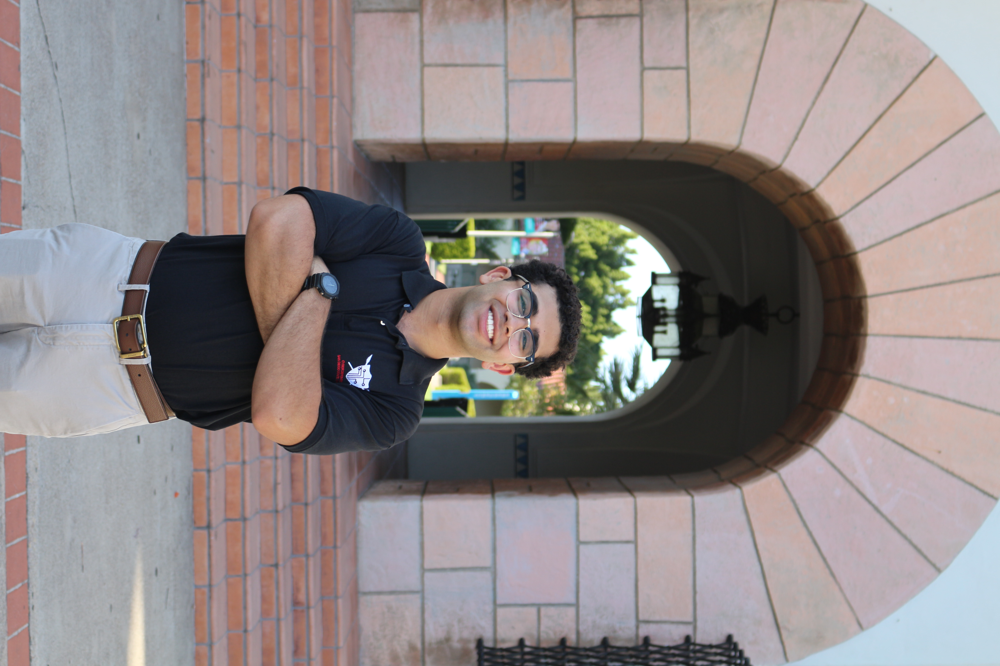

Eli Mishriki
aka: mesh25
height: 5'8"
weight: 155
occupation: Software Engineer
ethnicity: Coptic
location: Pismo Beach
"I have discovered this principle of life—that when I want to do what is right, I inevitably do what is wrong.
Romans 7:21-25"
Romans 7:21-25"